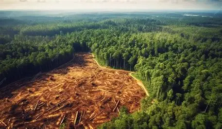
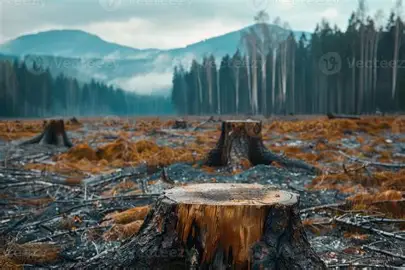
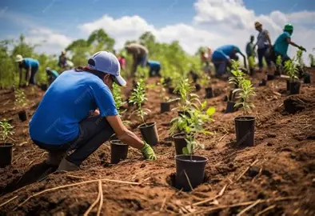

Causas
La expansión de la agricultura, la ganadería, la tala ilegal y el crecimiento de las ciudades son algunas de las principales causas de la deforestación.
Un problema ambiental que amenaza la biodiversidad, acelera el cambio climático y pone en riesgo los recursos naturales.
Saber másLos bosques son fundamentales para la vida en la Tierra. Sin embargo, millones de hectáreas desaparecen cada año debido a la tala excesiva, la expansión agrícola y el crecimiento urbano.

La expansión de la agricultura, la ganadería, la tala ilegal y el crecimiento de las ciudades son algunas de las principales causas de la deforestación.

La pérdida de biodiversidad, el aumento de las emisiones de carbono y la degradación de los ecosistemas son algunas de sus consecuencias más graves.

Promover la reforestación, proteger las áreas naturales y fomentar un uso sostenible de los recursos forestales son acciones fundamentales.